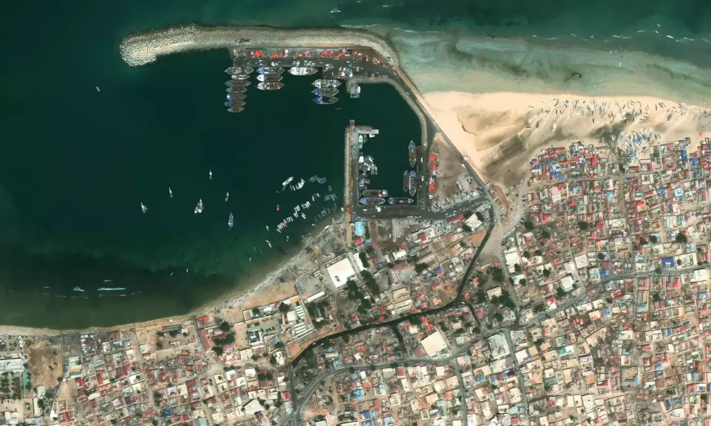

garowe is The capital City of Puntland.
Garowe has over 380,000 inhabitants.
a city in the northeastern Bari province (gobol) of Somalia. It is the seat of the Bosaso District. Located on the southern coast of the Gulf of Aden.
Bosaso has over 700,000 inhabitants.
Galkayo is the third-largest city in Somalia which serves as the capital of the north-central Mudug region. The city is divided into two administrative .
Galkacyo has almost 61,200 inhabitants